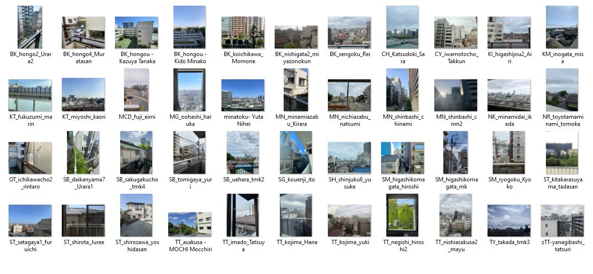
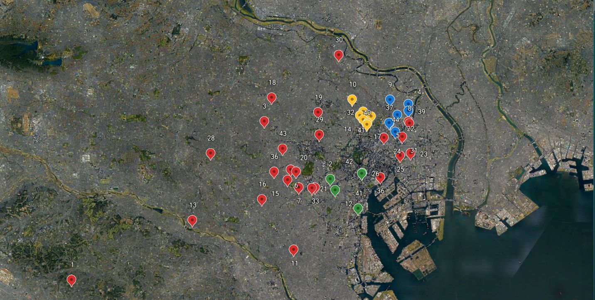
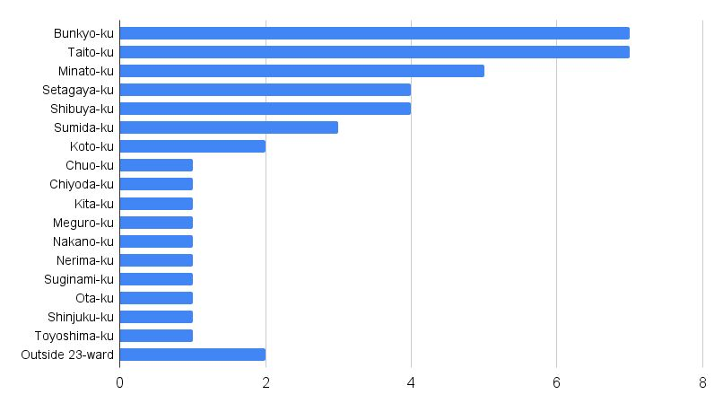
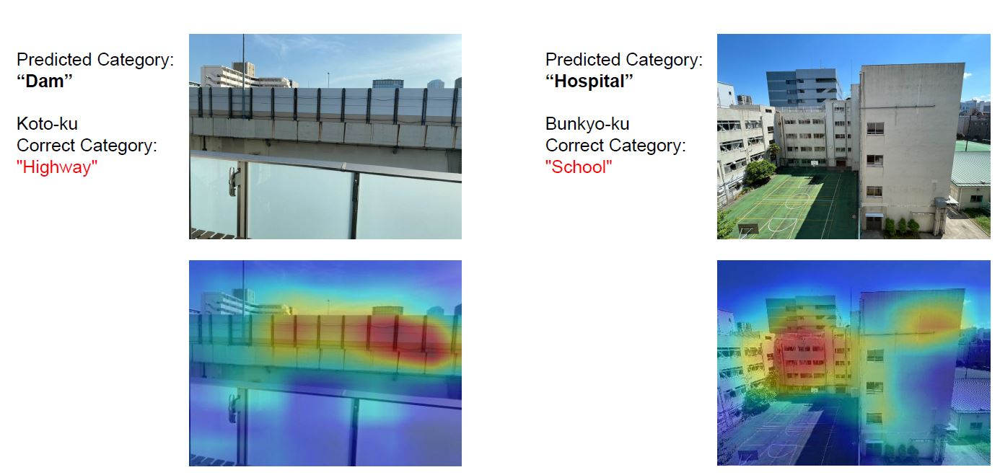
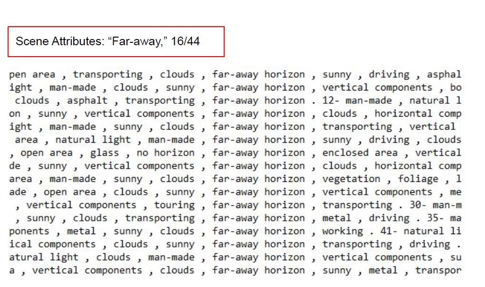
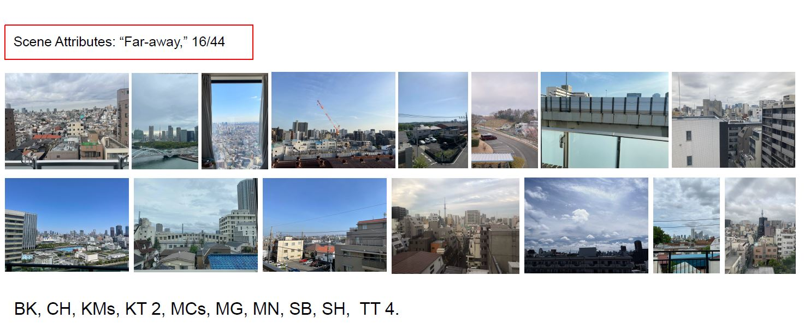
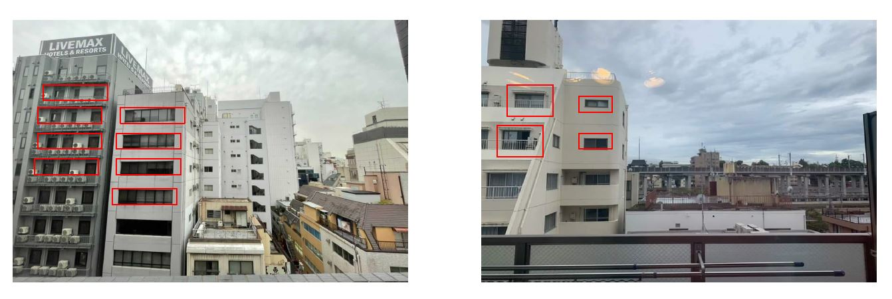

|
Tokyo Apartment Window Views -a complete speculation-
Final project for the MIT class
4.550/4.570
Computation Design Lab |
|
|  |
What window view does young people living in Tokyo have?
All figures created by author unless otherwise noted |
Project Overview
RESEARCH QUESTION(S)
|
||
|  |
Fig 1. Collected 44 photos: 12 students, 31 non-students |
|  |
Fig 2. 7 Bunkyo-ku; 7 Taito-ku; 5 Minato-ku |
|  |
Fig 3. Result - places2.csail.mit.edu |

|
Fig 4. Result - places2.csail.mit.edu |
|  |
Fig 5. Result - nltk |
|  |
Fig 6. Result - nltk |
|  |
Fig 7. Personal Speculation - privacy -> # of windows |
|
Conclusion
QUESTIONS
|
2013 All rights reserved. Last modified: Jan. 30, 2014 by TN